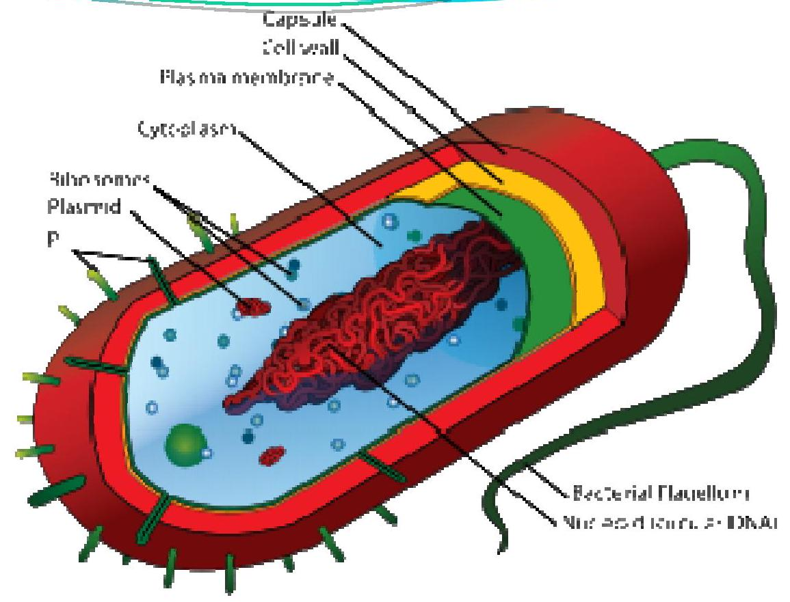
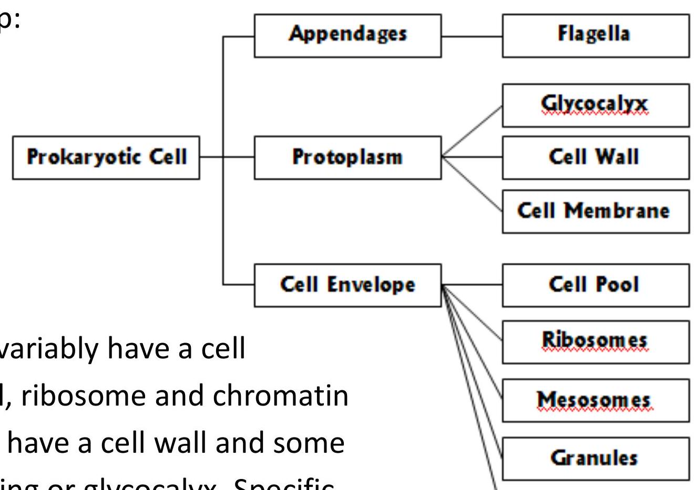
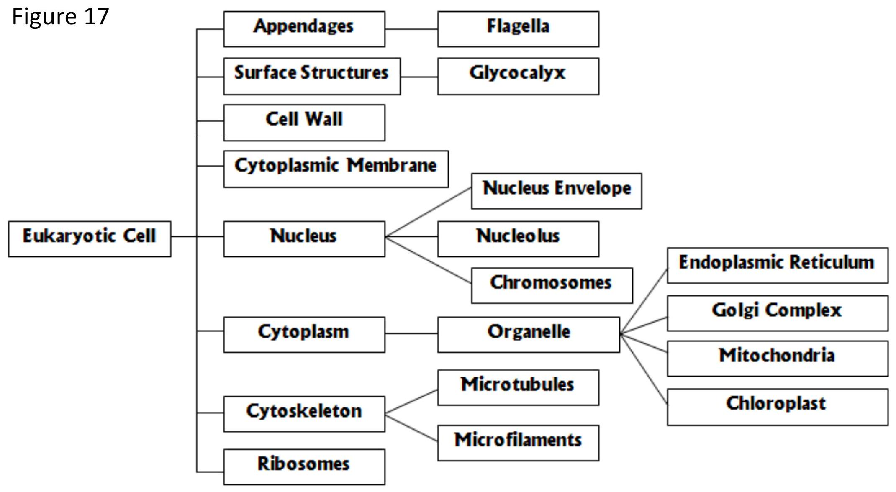

Prokaryotic and Eukaryotic Cells
Learning Objective:
After reading this module, students should be able to;
- Define prokaryotic and eukaryotic cell.
- Define and explain each organelle function of prokaryotic cell.
- Define and explain each organelle function of eukaryotic cell.
3.1 Cell
- The cell is the fundamental organizational unit of all living systems, including microorganisms.
- It provides the essential basis for organization, growth, metabolism, reproduction and heredity, which are the critical functions that comprise the essential characteristics of life.
- There are two different types of cells of living organisms:
- prokaryotic cells (cells lacking a nucleus)- bacteria
- Eukaryotic cells (cells with a nucleus)- protozoa, algae and fungi
- All cells have some common properties regardless of whether their organizational structure is prokaryotic or eukaryotic. Cell of all organisms:
- are highly organized
- are capable of growth and reproduction
- contain the same heredity molecule - DNA (deoxyribonucleic acid)
3.2 Prokaryotic Cell
$ The prokaryotic cell is more primitive and simple than eukaryotic cell. It does not have membrane bound compartments, called organelles, that serve specialized functions, as occurs in eukaryotic cells.
$ A prokaryotic cell does not have a nucleus and the heredity information (DNA) of a prokaryotic cell is not separated from the other constituents within the specialized organelle from the rest of the contents is of prime importance in distinguishing prokaryotic from eukaryotic cells.
The general cellular organization of a prokaryotic cell can be represented with the following micro map:
from of surface coating or glycocalyx. Specific structures that are found in some, but not all are flagella, capsules, slime layers and granules.
3.2.2 Flagella
$ The primary function of flagella is to confer motility or self-propulsion that is, the capacity of a cell to swim freely through an aqueous habitat. As the flagellum rotates, it causes the cell body to spin in the opposite direction and gives the cell a forward motion.
$ Figure 14 and 15
3.2.3 The Cell Envelope
* The cell envelope is the complex of layers external to the cell protoplasm. The layers of the envelope are stacked one upon another and are often tightly bonded together. The three basic layers that can be identified are:
- The glycocalyx
- The cell wall
- The cell membrane
Function of cell membrane:
- To regulate transport - that is the passage of nutrients into cell and the discharge of wastes.
- Enzyme secretion - the enzymes of respiration are located at the membrane. Macromolecules (carbohydrate, protein and fat) cannot permeate through the cell membrane. The enzyme is needed to brake the macromolecules.
- Cell membrane provides a site for the functions such as energy reactions, nutrient processing and synthesis.
3.2.4 Protoplasm
$Protoplasm is a prominent site for many of the cell's biochemical and synthetic activities. Its major component is water (70-80\%), which serves as a solvent for the cell pool, a complex mixture of nutrients, including sugars, amino acids and salts.
$The components of this pool serve as building blocks for cell synthesis or as sources of energy. Also contains larger, discrete cells masses such as the chromatin body, ribosomes, mesosomes and granules.
- Chromatin bodies - the heredity material of bacteria exists in the form of a single circular strand of DNA designated as the chromatin body or bacterial chromosome. By the definition, bacteria do not have a nucleus that is their DNA is not enclosed by a nuclear membrane, but instead is aggregated in a dense area of the cell called the nucleoid.
- Ribosomes - a bacterial cell contains thousands of tiny, discrete units called ribosomes. Ribosomes is where the protein synthesis is performed.
- Cytoplasmic inclusion/ granules - Inclusion bodies/ granules contain condensed, energy - rich organic substance including glycogen, fat and phosphate.
3.2.5 Bacterial Endospore
* Only certain bacteria have endospore. This type of bacteria is called an endospore because it is produced inside a cell. Endospore is formed when the environment is not suitable for the bacteria to be reproductive.
3.3 Eukaryotic Cell
$ All eukaryotic microbial cells have a cytoplasmic membrane, nucleus, mitochondria, endoplasmic reticulum, golgi apparatus, vacuoles and cytoskeleton.
* A cell wall, locomotor appendages, chloroplasts and glycocalyx are found only in some groups.
3.3.1 Flagella
- The eukaryotic flagellum is thicker, structurally more complex and covered by an extension of the cell membrane.
3.3.2 Surface Structures
- There are 3 basic layers:
- Glycocalyx - An outermost boundary that comes in direct contact with the environment. This structure is usually composed of polysaccharides. The glycocalyx contributes to protection, adherence of cells to surfaces and reception of signals from other cells and from the environment.
- Cell wall - Cell walls of algal and fungal cells are rigid and provide structural support and shape. Fungal cell walls have a thick, inner layer of polysaccharide fibers composed of chitin or cellulose and a thin outer layer of mixed glycans. (Figure 18)
- Cytoplasmic membrane - The cytoplasmic membrane of eukaryotic cells is a typical bilayer of lipids in which protein molecules are embedded. Also contain sterols.
3.3.3 The Nucleus: The Cell Control Center
- The nucleus is a compact sphere that is the most prominent organelle of eukaryotic cells. It is separated from the cell cytoplasm by an external boundary called a nuclear envelope.
- Nucleus contains chromosomes that bring the genetic information (DNA). In the nucleus, nucleolus produce components that are used to build protein.
3.3.4 Endoplasmic Reticulum (ER)
- There are two kinds of ER:
- rough endoplasmic reticulum (RER)
- Smooth endoplasmic reticulum (SER)
- The RER originates from the nucleus membrane and extends in a continuous network through the cytoplasm even to the cell membrane. This is to permits the RER to transport materials from the nucleus to cytoplasm.
- The RER appears rough because of large numbers of ribosome partly attached to its membrane. Protein are synthesized on the ribosome.
- The SER is a closed tubular network within ribosome that functions in nutrient processing and synthesis and storage of non protein macromolecules such as lipids, sterols and glycogen.
3.3.5 Ribosome : Protein Synthesizers
- Ribosome are numerous, tiny particles and distributed in two ways:
- Some are scattered freely in cytoplasm
- Others associated with the RER as previously described
3.3.6 Mitochondria
- The function of mitochondria is to supply energy.
- Respiration process in the cristae (inner membrane), extract energy from the nutrient molecules and stores it in the form of high-energy molecules or ATP (adenosine tryphosphate critae).
3.3.7 Chloroplasts
- Chloroplasts are only found in algae and plant cells that are capable of converting of energy of sunlight into chemical energy through photosynthesis.
3.3.8 Golgi Complex
- This Organelle is always closely associated with the endoplasmic reticulum, both in its location and function.